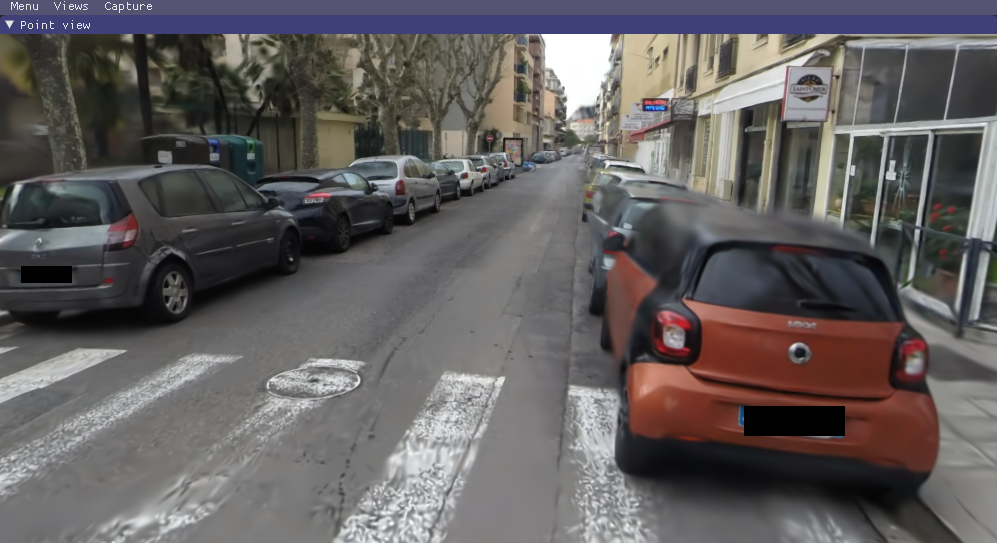
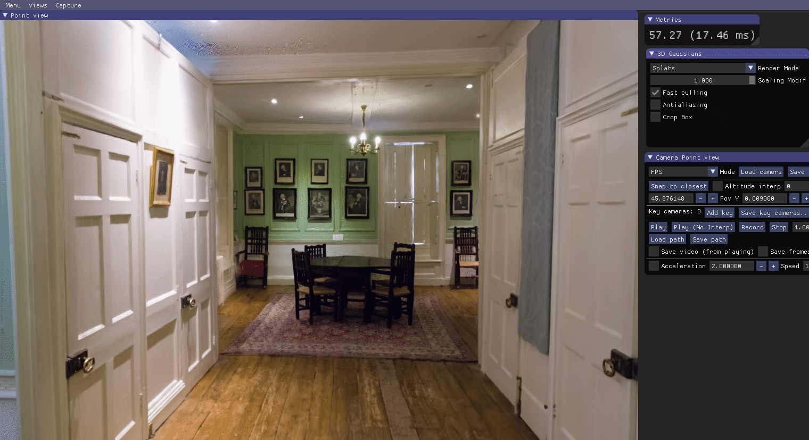
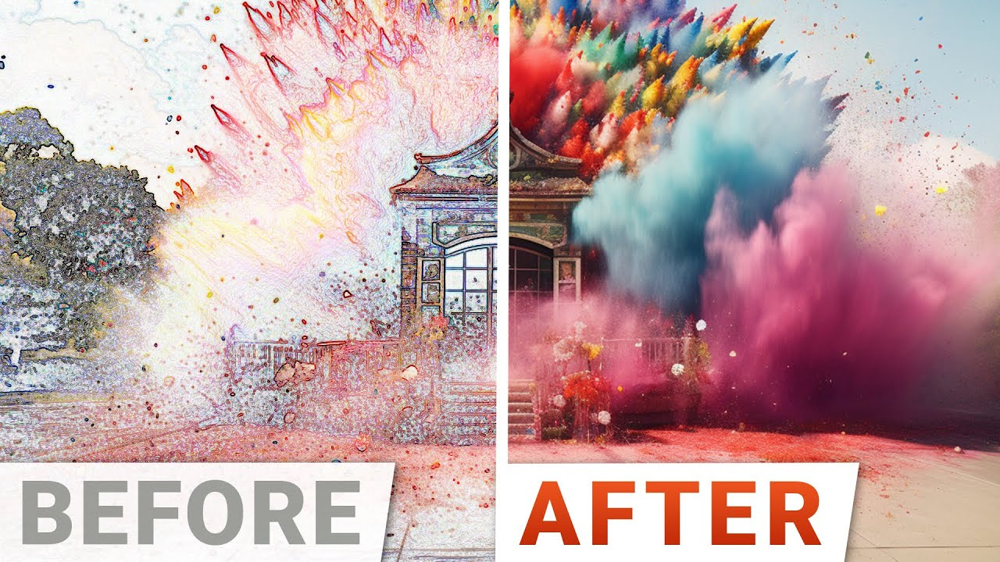
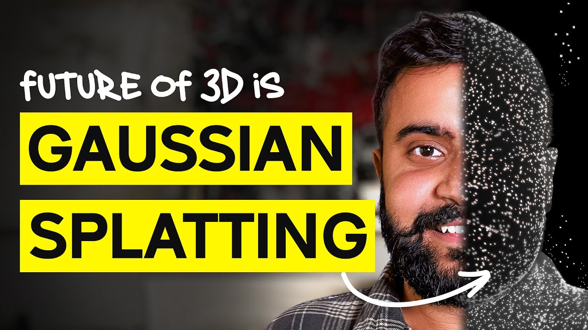
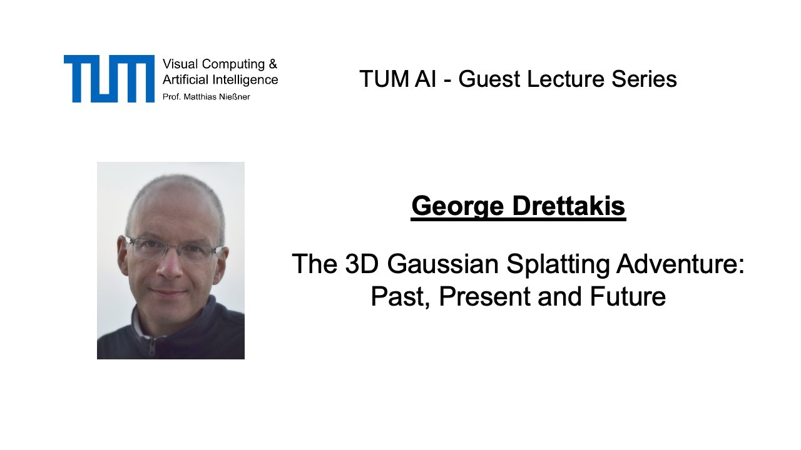
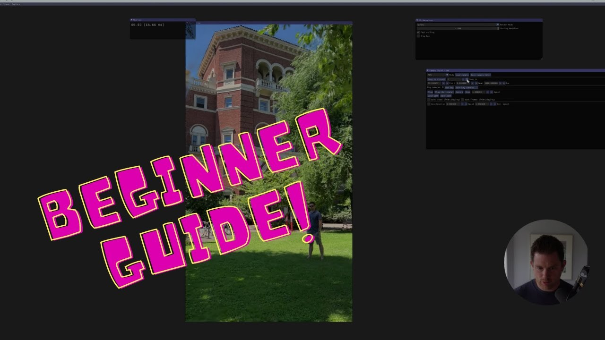

3D 高斯泼溅 (3D Gaussian Splatting)
2023 年 SIGGRAPH 横空出世、把「三维场景重建 + 实时渲染」彻底带火的方法。用一句话概括：把一个场景表示成几百万个带颜色和透明度的「3D 高斯椭球」，靠光栅化把它们泼到屏幕上——又快又真。

1 · 这是什么 & 为什么火
它解决的问题叫新视角合成（Novel View Synthesis）：给一堆某场景的照片，重建出一个三维表示，让你能从没拍过的新角度把它渲染出来。
在 3DGS 之前，这个领域的王者是 NeRF（神经辐射场）——质量很高，但用一个神经网络逐条光线采样去渲染，又慢又难实时。3DGS 换了个思路：不再用神经网络隐式表示，而是把场景显式地表示成一大堆「3D 高斯椭球」，再用 GPU 光栅化飞快地渲染。结果是第一次同时拿到「高质量 + 实时 + 训练不慢」，于是迅速火遍学术界和工业界。
和 NeRF 的关键区别
| NeRF（神经辐射场） | 3DGS（高斯泼溅） | |
|---|---|---|
| 场景表示 | 隐式：一个神经网络(MLP) | 显式：一堆 3D 高斯椭球（无网络） |
| 渲染方式 | 逐光线体积采样查询 MLP | 投影 + 排序 + alpha 混合的光栅化 |
| 渲染速度 | 慢（Mip-NeRF360 约 0.06–0.14 FPS） | 实时（约 134 FPS） |
| 训练时间 | 很长（Mip-NeRF360 约 48 小时） | 分钟级（约 27–42 分钟达高质量） |
| 可编辑性 | 较难（藏在网络权重里） | 较易（每个高斯是显式图元，可增删改） |
数据出处：论文 Table 1 / 摘要（arXiv:2308.04079），详见 第 5 节。
2 · 学习路线图
别一上来就啃论文。按「入门 → 进阶 → 实践 → 前沿」四段走，每段配好了对应资源（详细链接在 视频 与各节里）。
① 入门 · 建直觉
- 读 HuggingFace 入门博客（最佳第一篇）
- 看 Two Minute Papers 概览视频
- 浏览官方项目页的演示
- 玩本页 2D 泼溅 demo
② 进阶 · 懂数学
- 精读原论文
- LearnOpenCV 论文精讲
- 深挖博客：球谐/协方差/投影推导
- 看原作者 TUM 讲座
④ 前沿 · 追新
- 读综述建立全景
- 4D / SLAM / 提网格 / 抗锯齿（第 8 节）
- 盯 Awesome-3DGS 追最新
3 · 核心原理（5 步）原理
3DGS 本质是「一堆可微分的高斯图元 + 一个可微分光栅化器 + 梯度下降优化」。拆成 5 步看就通了。
- 场景 = 一堆 3D 各向异性高斯。每个高斯椭球存四样东西：位置（均值 μ，椭球在哪）、协方差 Σ（形状朝向，写成
Σ = R S Sᵀ Rᵀ即「缩放 + 旋转(四元数)」以保证是合法协方差，"各向异性"=三个轴能不等长，好贴合表面）、不透明度 α、颜色（球谐 SH）（用球谐系数表示随视角变化的颜色，能表现高光/反射）。 - 用 SfM / COLMAP 初始化。先用运动恢复结构（COLMAP）从照片估出相机位姿和一团稀疏点云；每个点种下一个初始高斯，给优化一个靠谱的几何起点（而非乱猜）。
- 可微分的瓦片光栅化（渲染器）。渲染一帧：把每个 3D 高斯的均值与协方差投影成 2D 椭圆「斑点(splat)」；把画面切成瓦片(tile)，每块内的高斯用 GPU 基数排序按深度排序（每帧排一次，不是每像素）；瓦片内从前到后做 alpha 混合得到像素颜色。整个过程可微，梯度能回流到每个高斯。
- 梯度下降优化。渲染图和真实照片比，用
L1 + D-SSIM损失；梯度更新每个高斯的位置/协方差/不透明度/颜色。优化与下一步的"增删"交替进行。 - 自适应密度控制（克隆 / 分裂 / 剪枝）。周期性调整高斯集合：欠重建处（小高斯、梯度大）克隆补细节；过重建处（大高斯、梯度大）分裂成更小的；几乎透明的高斯剪枝删掉（并周期性重置不透明度清"浮点体"）。于是模型从稀疏种子长成约 1–5 百万个自适应高斯。


4 · 🎮 动手玩：2D 高斯泼溅 可交互
真正的 3DGS 是 3D 的，但核心直觉在 2D 上就能体会：一张图，可以用许多个带颜色、半透明、各向异性的「高斯斑点」叠加（alpha 混合）出来——斑点越多越清晰，这就是「泼溅」与「致密化」的本质。拖动滑块亲手感受：
N 越大越像真值；高斯越小越锐但需要更多个——这正是论文里「自适应密度控制」要自动平衡的事。
5 · 关键结果
论文在 Mip-NeRF360 等数据集上的对比（出处：论文 Table 1）。一句话：质量追平甚至超过 Mip-NeRF360，渲染却快约 1000 倍。
| 方法 | 渲染 FPS | 训练时间 | PSNR↑ | SSIM↑ | LPIPS↓ |
|---|---|---|---|---|---|
| 3DGS (Ours-30K) | ~134 | 27–42 分钟 | 27.21 | 0.815 | 0.214 |
| Mip-NeRF360 | 0.06–0.14 | ~48 小时 | 27.69 | 0.792 | 0.237 |
| Instant-NGP (Big) | 11.7–17.1 | ~6 分钟 | 25.59 | 0.699 | 0.331 |
| Plenoxels | 6.8–13.0 | ~26 分钟 | 23.08 | 0.626 | 0.463 |
注：官方仓库后续优化又带来约 ×1.6（默认）/ ×2.7（sparse Adam）的训练提速。
6 · 开源生态与工具
围绕 3DGS 已长出一整套工具链。星标/更新均为 GitHub API 真实抓取于 2026-06-27。按用途分四类，先看你要干嘛。
① 训练 / 参考实现
| 仓库 | 用来干嘛 | 语言 | 星标 |
|---|---|---|---|
| graphdeco-inria/gaussian-splatting | 官方参考实现，理解原始方法从这开始（研究/非商业许可） | Python | 22.5k |
| nerfstudio | 端到端框架，内含 splatfacto 的清爽训练路径 | Python | 11.7k |
| gsplat | 现代模块化 CUDA 光栅化库，自己搭训练器的后端（最活跃） | CUDA/Py | 5.3k |
| OpenSplat | 跨平台、CPU/GPU 都能跑、依赖轻的生产级训练器 | C++ | 2.1k |
② Web / 实时查看器
| 仓库 | 用来干嘛 | 语言 | 星标 |
|---|---|---|---|
| playcanvas/supersplat | 浏览器里的可视化编辑器（裁剪/清理/导出/发布），最适合非程序员 | TS | 9.3k |
| playcanvas/engine | 原生支持 3DGS 的 Web 引擎（WebGL/WebGPU/WebXR） | JS | 16.1k |
| antimatter15/splat | 极简 WebGL 查看器，读它的代码学"泼溅怎么渲染" | JS | 3.0k |
| GaussianSplats3D | three.js 集成，把 splat 嵌进现有 three.js 场景 | JS | 2.8k |
③ 引擎 / DCC 集成 ④ 预处理
引擎集成
Unity：aras-p/UnityGaussianSplatting（⭐3.3k，事实标准）。Unreal：MLSLabs UE 插件（含 4DGS）。Blender：ReshotAI 插件。
预处理（先跑这个！）
COLMAP（⭐12k）——把你的照片/视频帧算成相机位姿 + 稀疏点云，几乎所有训练器都吃它的输出。
不想装环境？在浏览器里直接看
- antimatter15.com/splat —— 拖动即可环绕观察 garden/bicycle 场景
- superspl.at —— PlayCanvas SuperSplat 编辑器 + 查看器，可加载样例场景实时编辑
- Awesome-3DGS（⭐8.7k）—— 持续更新的论文/代码/工具总目录，追新看它
7 · 动手实践流程
从你自己的照片/视频，到一个能在浏览器里转的 splat，标准管线长这样：
最快上手：官方实现
# 需要 CUDA、合适的 PyTorch；建议先看仓库 README 的环境要求
git clone https://github.com/graphdeco-inria/gaussian-splatting --recursive
# 训练（DATA 是 COLMAP 处理好的数据集目录）
python train.py -s <DATA>
# 实时查看（仓库提供 SIBR 查看器）
# 也可把导出的 .ply 拖进 https://superspl.at/ 在浏览器里看- 新手友好替代：OpenSplat（跨平台、能用 CPU 兜底）或 nerfstudio 的
splatfacto - 实操教程：LearnOpenCV（含 NeRFStudio 训练）；中文见 第 9 节 的 B 站「保姆教程」
- 许可证注意：Inria 官方实现与部分研究分支是研究/非商业；要做产品看 gsplat(Apache-2.0)、OpenSplat(AGPL)、PlayCanvas 系。
8 · 前沿方向
原论文之后，3DGS 迅速长出一片生态。几个有代表性、可溯源的方向：
🎞️ 动态 / 4D
4D Gaussian Splatting（CVPR 2024）——把高斯扩展到时间维做动态场景，报告 RTX 3090 上 800×800 约 70 FPS。
🗺️ SLAM
SplaTAM / Gaussian Splatting SLAM（CVPR 2024）——用显式高斯做稠密 RGB-D 实时定位与建图。
📐 提网格
SuGaR（CVPR 2024）——约束高斯贴合表面，再几分钟内抽出可编辑的三角网格。
🔍 抗锯齿
Mip-Splatting（CVPR 2024 最佳学生论文）——加 3D 平滑 + 2D Mip 滤波，消除缩放时的锯齿/伪影。
想系统追踪：读综述，再盯 Awesome-3DGS。
9 · 学习视频
YouTube（英文，封面已下载到本地）+ Bilibili（中文，链接）。封面来自官方缩略图。
英文（YouTube）

YouTube入门概览
YouTube概念讲解
YouTube原作者讲座
YouTube实操中文（Bilibili）
说明：本环境无法直连 B 站抓封面，下面是搜索得到的真实链接（点开即看）。「保姆教程」3DGS_01/02/03 是较成体系的入门→实操中文路径。
10 · 术语表 可搜索
3DGS 黑话不少，这里按本页用到的词收录，输入关键词即时过滤（中英文都行）。
ai-learning-skills 家族中 domain-learn 方向的样例：把一个开放领域调研整理成可离线学习页，并配可交互 demo。